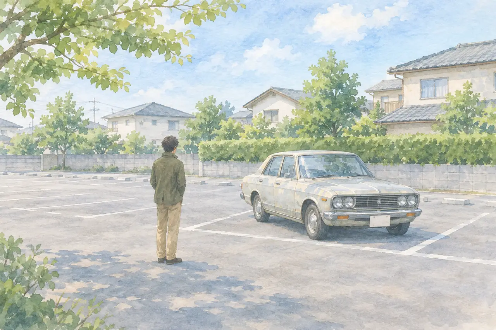
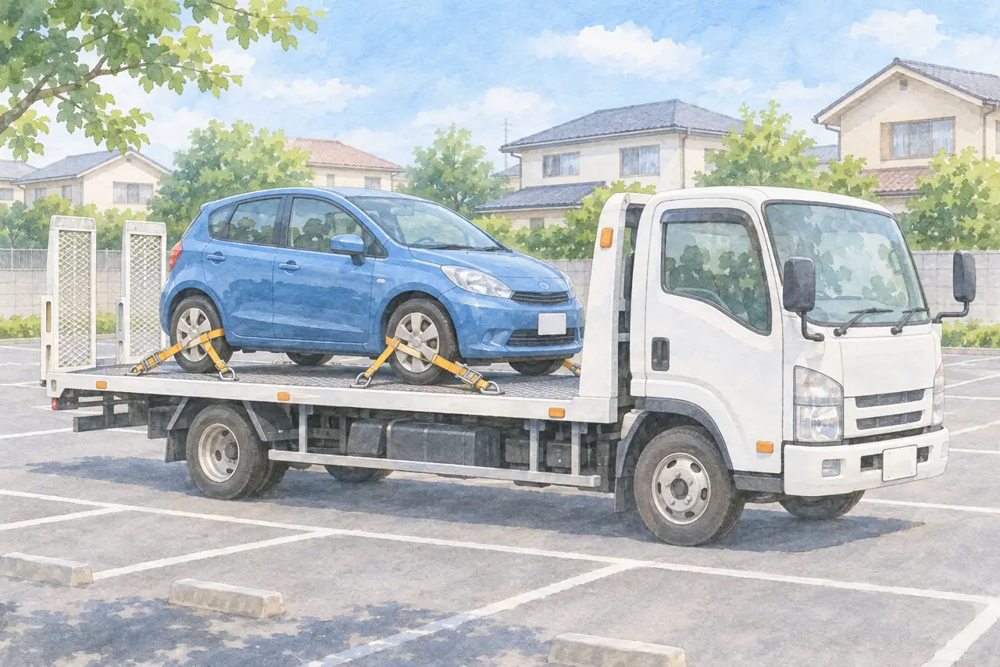

川口市にお住まいの方へ
川口市で車を手放すなら
廃車・引き取りの相談先と、費用の考え方
公開
こんにちは、東京都足立区江北で自動車解体・廃車買取をしている「大崎商店 環七店」です。
「川口市に住んでいるけど、足立区のお店に頼めるのかな」
「引き取りに来てもらえるのか、費用はどうなるのか知りたい」
そんなとき、川口市のお客様も、大崎商店にご相談いただけます。
この記事の要点
- 川口市への引き取りも行っています。 青木・並木・領家などへ、引き取りに伺った実績があります。
- 川口市の多くの地区は、約30分圏内です。 買取価格がつかない車は、環七店または入谷店から車で片道約30分圏内なら、引き取り無料です（目安です）。市内全域ではないため、場所を伺ってご案内します。
- 電話では、車の種類と置いてある場所を伝えてください。 場所を伺って、引き取れるかをご案内します。
① 川口市から、足立区のお店に頼める？

川口市の車を、足立区のお店に引き取ってもらえる場合があります。まず、車の置き場所が対応地域かを確認しましょう。
② 引き取りを頼む前に、費用を確認しましょう
費用や対応は、依頼先からの距離や車の状態で変わることがあります。電話では、車の置き場所と状態を伝え、引き取りから廃車手続きまでに支払う総額を確認しましょう。
- 「川口市の〇〇町にある、動かない車を引き取れますか」
- 「引き取りや廃車手続きに、費用はかかりますか」
- 「現場で追加費用がかかるとしたら、どんな場合ですか」
③ 電話で伝えることを確認しましょう
伝える内容が多いほど、「行ってみたら、引き取れなかった」を減らせます。
- 置いてある場所：地区名（町名）と、駐車場か、道路沿いか
- 道の広さ：積載車が入れる道か、細い道の奥か
- 車の種類と状態：軽自動車か普通車か。エンジンがかかるか、敷地内で車を動かせるか
- 車検証と名義：車検証があるか、所有者が誰か。見つからなければ、そのまま伝える
動かない車の運び方は、動かない車を運ぶにはの記事で、くわしく紹介しています。
④ 大崎商店の場合：川口市の引き取り

大崎商店では、川口市への引き取りも行っています。 青木・並木・領家などへ、引き取りに伺った実績があります。軽自動車も普通車も、動かない車も、引き取りました。 川口市は入谷店から近く、多くの地区は、環七店または入谷店から車で片道約30分圏内です。ただし、市内全域が圏内とは言えないため、置いてある場所を伺ってご案内します。
まず、環七店（03-3854-4141）へお電話ください。地区名や住所、車の種類と状態を伺い、引き取りの可否や費用をご案内します。
大崎商店では、
- 解体費用・手続き代行費用・印紙代は、別請求しません
- 足立区外も、買取価格がつかない車は、環七店または入谷店から車で片道約30分圏内は引き取り無料（目安です）
- 買取価格がつく車は、圏外でも、所在地と車の状態によっては無料で引き取り（事前にご案内します）
- 車によっては、引き取り当日その場で現金買取もできます
- 車のお持ち込みは、どこからでも歓迎（基本は環七店。日時は、事前にお電話でご相談ください）
片道約30分圏内が、無料の目安です。 それより遠い場所も、車の種類や状態、日程によっては、お引き受けできる場合があります。遠い場合は、人件費や高速代がかかるため、無料が難しいこともあります。場所を伺って、事前にご案内します。
動かない車は、ワイヤーで積載車の荷台に引き上げて積むこともできます。家の前に積載車が入れない場合でも、車を敷地内で動かせるかによって、対応できることがあります。 まったく動かない車は、近くに積載車を止めて積み込む場所が必要です。道幅や現場の状況によっては、お断りすることがあります。その場合も、積み込めないことを理由とする追加費用はいただきません。
車検が切れている車を、ご自身で道路を運転して移動させることはおすすめできません。まずは、敷地内で動かせるかをお知らせください。
解体作業は、解体業の許可を受けた入谷店で行います。引き取りの範囲は、出張引き取りの対応エリアの記事をご覧ください。
ご自分の車の場合が気になったら、お気軽にご相談ください。車の状態と置き場所を伺い、ご案内します。
電話で相談する03-3854-4141よくある質問
Q. 川口市のどの地区まで来てもらえますか？
A. 青木・並木・領家などへ、引き取りに伺った実績があります。ほかの地区も、置いてある場所を伺って、引き取れるかをご案内します。まず、お電話でご相談ください。
Q. 川口市の車でも、足立区のお店で廃車にできますか？
A. ご依頼いただけます。足立ナンバー以外の車もお引き受けし、当店への名義変更などを含めて手続きを進めます。必要な書類は、普通車か軽自動車か、所有者が誰かに応じてご案内します。
Q. 引き取りの費用は、かかりますか？
A. 買取価格がつかない車は、環七店または入谷店から車で片道約30分圏内なら、引き取り無料です（目安です）。買取価格がつく車は、圏外でも、所在地と車の状態によっては無料で引き取ります。事前にご案内します。
Q. 車を、お店まで持ち込むこともできますか？
A. 車のお持ち込みも歓迎しています。基本は環七店です。車検・自賠責が有効で安全に自走できるかを確認し、持ち込み先と日時を事前にお電話でご相談ください。動かない車は運ぶ方法もご相談ください。
Q. 現場に来てもらってから、断られることはありますか？
A. 車を動かせるか、近くに積載車を止めて積めるかによって変わります。必要な場所を確保できない場合は、お断りすることがあります。その場合も、積み込めないことを理由とする追加費用はいただきません。電話で、車の状態・場所・道の広さを先に伺い、断る事態をできるだけ減らします。
川口市のご相談は、大崎商店へ
電話で相談する 03-3854-4141メールで相談する（フォーム）大崎商店 環七店
電話：03-3854-4141
〒123-0872
東京都足立区江北7丁目1−3
営業時間：月〜土 10:00〜18:00
休業日：日曜・祝日
環七沿い／舎人ライナー
西新井大師西駅
大崎商店 入谷店
電話：03-3899-2837
〒121-0836
東京都足立区入谷7丁目5−11
営業時間：月〜土 9:30〜17:30
休業日：日曜・祝日・第2土曜
川口市のご相談は、環七店へ。 置いてある場所（地区名）、車の種類、車の状態をお伝えください。
くわしい条件と出典（読みたい方向け）
- 引き取りの条件：積載車は1台で、複数の引き取りを同時には行っていません。すぐに伺えるかは、そのときの仕事の状況によります。到着の日時は、電話で事前にご案内します。
- 足立区外の車。大崎商店への名義変更などにあわせて、足立区内の窓口で手続きを進めます。普通車の窓口は足立自動車検査登録事務所、軽自動車は軽自動車検査協会の足立支所です。窓口や書類は、使用の本拠の位置や申請内容によって変わります。関東運輸局・登録手続きの管轄／軽自動車検査協会・足立支所
- 車検証の所有者の確認：所有者がディーラーやローン会社の場合は、ご自身だけでは進められないことがあります。電話で、車検証の所有者と使用者を伺います。くわしくは、ローンが残っている車は廃車できる？の記事をご覧ください。
- 足立区の方へ：足立区で車を手放すときの相談先は、足立区で車を手放すならの記事をご覧ください。
※掲載画像はAIで生成したイラストです。実際の店舗・人物・車両とは異なります。